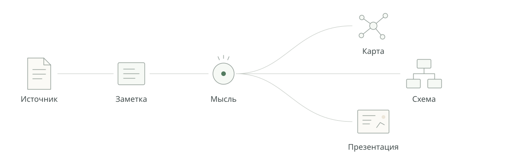
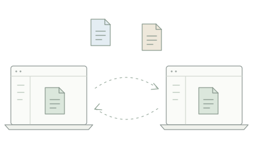
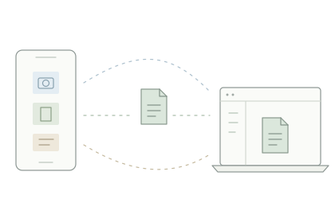

Пишите
Markdown без отказа от визуального редактора.
Markdown · Формулы · Таблицы · Изображения · Ссылки · HTML / Live HTML
iO ditor
Локальное рабочее пространство для документов, заметок, идей и визуального мышления.
Работайте с Markdown, читайте источники, связывайте идеи, создавайте схемы и презентации — в одном пространстве.
01 / Рабочее пространство
Источник становится заметкой. Заметка — мыслью. Мысль — картой, схемой или презентацией. В центре работы остаются обычные файлы.
Источник → Заметка → Мысль → Карта / Схема / Презентация

Markdown без отказа от визуального редактора.
Markdown · Формулы · Таблицы · Изображения · Ссылки · HTML / Live HTML
Держите источники рядом с текстом.
PDF · EPUB · DjVu · Zero
Подробнее о Zero →Связывайте документы, заметки и идеи.
Карты мыслей · Граф · Источники · Ссылки
Превращайте идеи в результат.
Рисование · Mermaid · Live HTML · Визуализация данных · Презентации
03 / За пределами одного экрана
Синхронизируйте рабочее пространство напрямую между компьютерами.

Добавляйте материалы с телефона прямо в iO ditor.

04 / Локальная работа с файлами
Markdown остаётся Markdown. Изображения — изображениями. Документы хранятся в ваших папках.
iO ditor добавляет связи и инструменты вокруг файлов, не превращая вашу работу в закрытую базу данных.
Просматривайте предыдущие версии документов, сравнивайте изменения и при необходимости возвращайтесь к более раннему состоянию — без изменения структуры рабочего пространства.
Предыдущие версии · Сравнение · Восстановление
Подключайте внешние ИИ-инструменты и автоматизацию к рабочему пространству через контролируемый MCP-интерфейс, сохраняя файлы и структуру проектов в центре работы.
Внешние инструменты · Контролируемый доступ · Контекст рабочего пространства
Загрузки
Скоро
Все загрузки